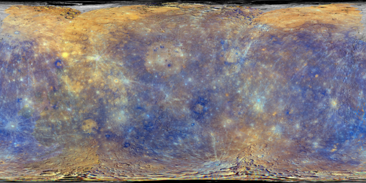

Planete la plus proche du soleil, Mercure est visible
depuis la terre pendant de courtes périodes seulement.
On peut l'observer au printemps et en Automne,juste
au dessous de l'horizon au crépuscule et à l'aube.
| Diamètre moyen | 4879 km |
|---|---|
| Periode de rotation(en jour)
La période de rotation est la durée mise par un astre pour faire un tour sur lui-même. |
58,6 jours |
| Periode orbitale(année)
La période de révolution, aussi appelée période orbitale, est la durée mise par un astre pour accomplir une révolution complète autour d’un autre astre |
87,97 jours |
| Temperature minimal | -180°C |
| Temperature maximale | 430°C |
| Lunes | 0 |
| Population | 0 |
Mercure est une petite planete, dense et couverte de crateres, si proche du soleil qu'elle est sans cesse brulée par les éruptions solaires.
La surface de Mercure est marquée par de nombreux cratères, vestiges de son passé tumultueux. Ces impacts, combinés à l'absence d'atmosphère significative pour les éroder, donnent à la planète une apparence semblable à celle de notre Lune. Parmi les formations les plus notables se trouve le bassin Caloris, un cratère géant de 1 550 kilomètres de diamètre, causé par un impact massif.
